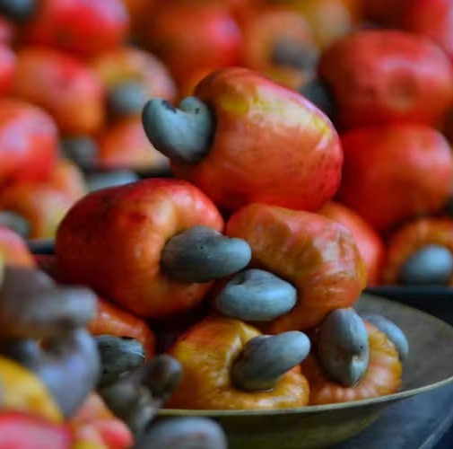
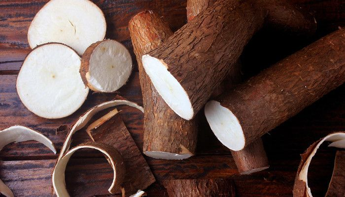
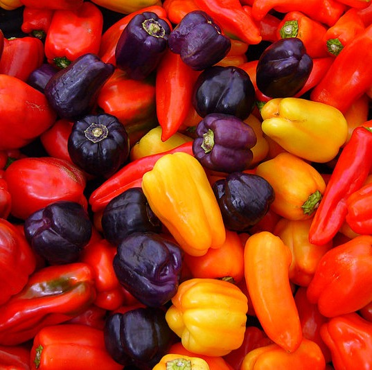
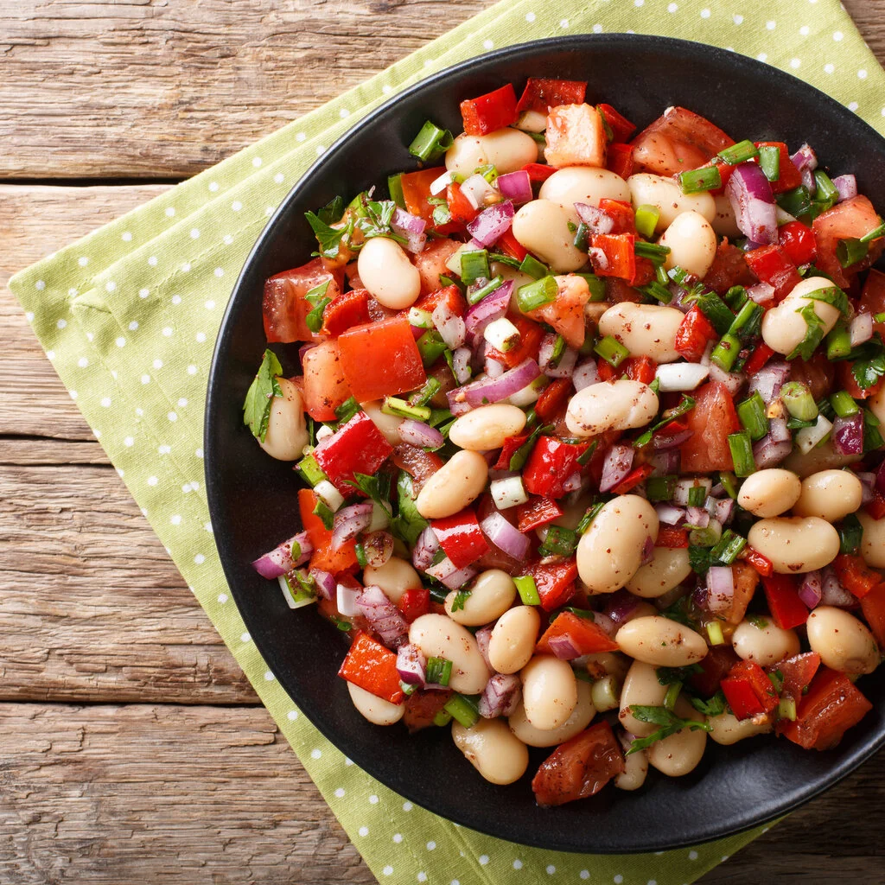
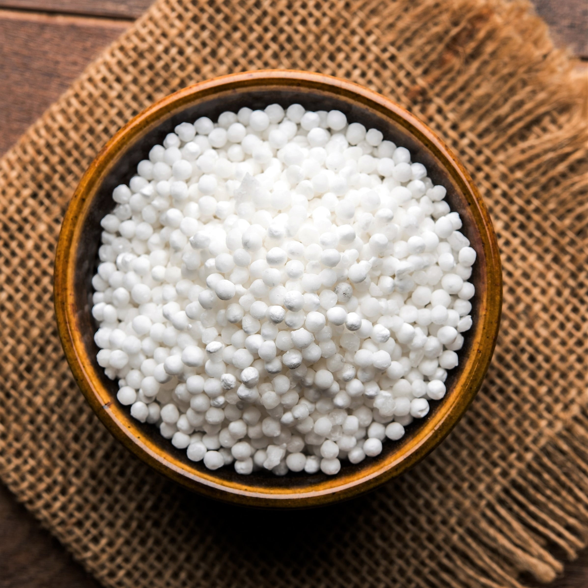
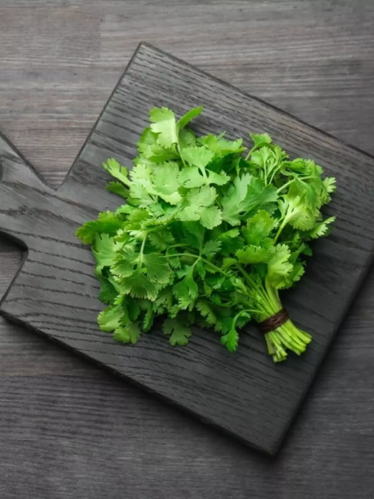

Família Nascimento
Castanha-de-caju orgânica · Camacã, BA · 60km

Itacaré, Bahia
Onde a mata encontra o oceano — e os dois acabam no prato
Itacaré fica no sul da Bahia, onde o Rio de Contas deságua no Atlântico. Protegida pela Mata Atlântica e banhada por um oceano generoso, a cidade tem uma culinária que não é escolha: é consequência. O que o mar dá, a terra complementa. O que a mata esconde, o conhecimento local revela. Nossos fornecedores são vizinhos, não cadeias logísticas.

Rua das Pitangueiras, 142 — Centro, Itacaré, BA
Castanha-de-caju orgânica · Camacã, BA · 60km
Pesca artesanal · Itacaré · 500m
Queijo coalho artesanal · Itacaré · 8km
Ervas, pimentas e hortaliças orgânicas · Itacaré · 12km

Do suco ao molho e à castanha: o caju fecha o prato e abre a sobremesa.

Purê, frita ou na tapioca: a raiz que sustenta a cozinha nordestina.

Aroma que não queima: finalizamos peixes e caldinhos com ela.

Grelhado na chapa, no baião ou na pamonha: o queijo que derrete certo.

Molhos, farofas e textura: a castanha que vem da nossa região.

Caldinhos, saladas e o feijão que não é só feijoada.

Da goma à crepioca: a base da nossa aula de sábado e dos entradinhas.

O cheiro do Nordeste: em todo refogado, caldo e vinagrete.

O ouro líquido da cozinha baiana: peixes, moquecas e pirões.

Curau, pamonha, canjica e broa: o milho em doce e salgado.

Menos de 80km do produtor à mesa
Ingredientes com origem, sabor com história